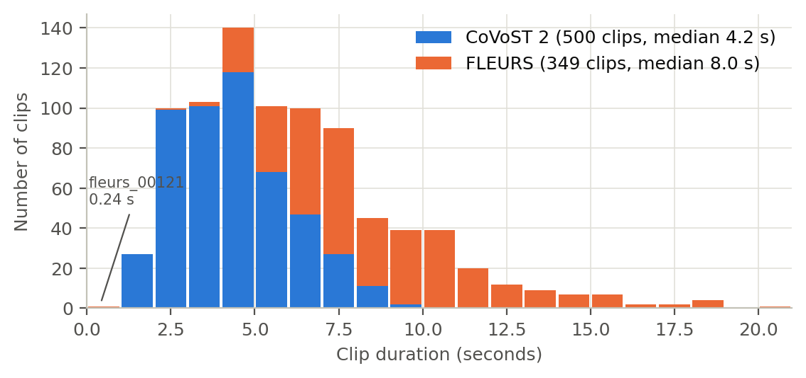
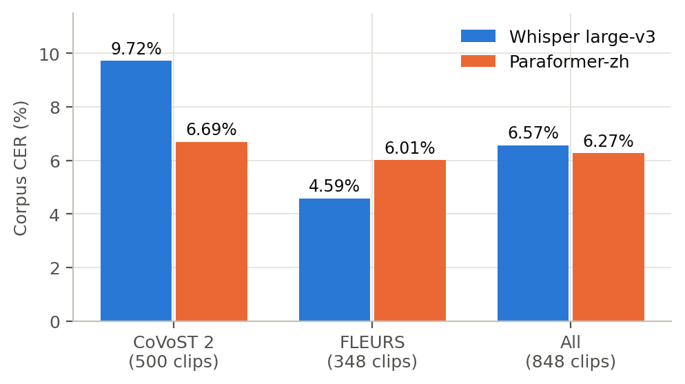
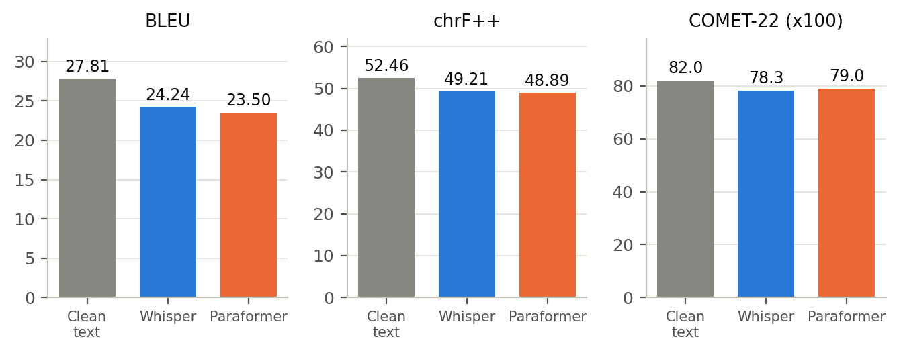
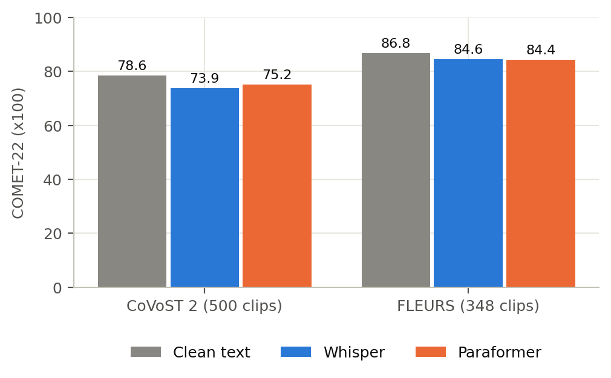
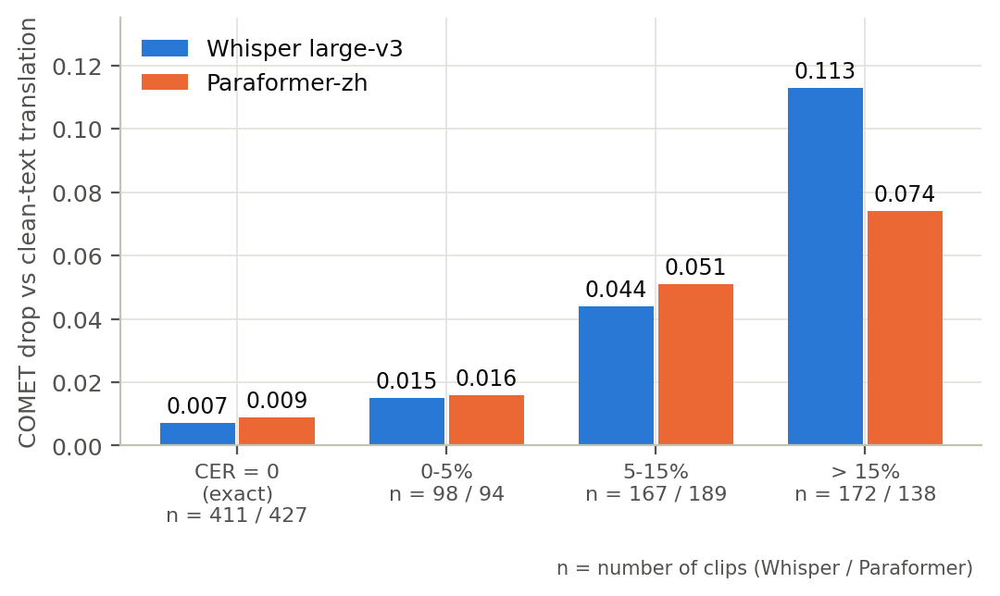
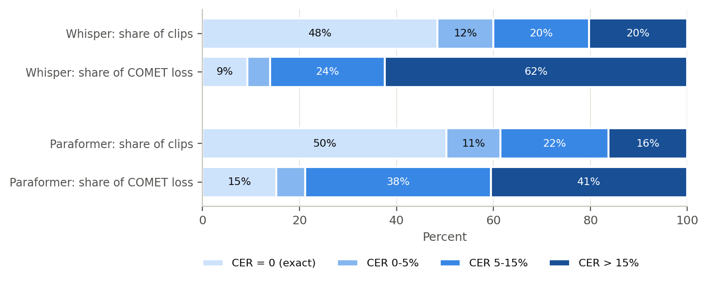
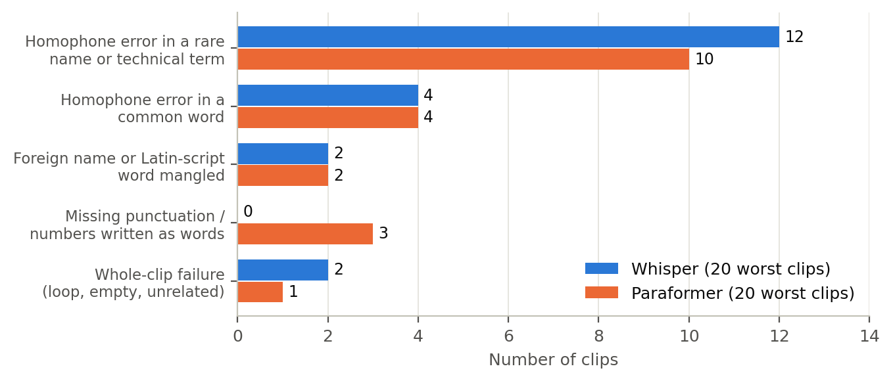
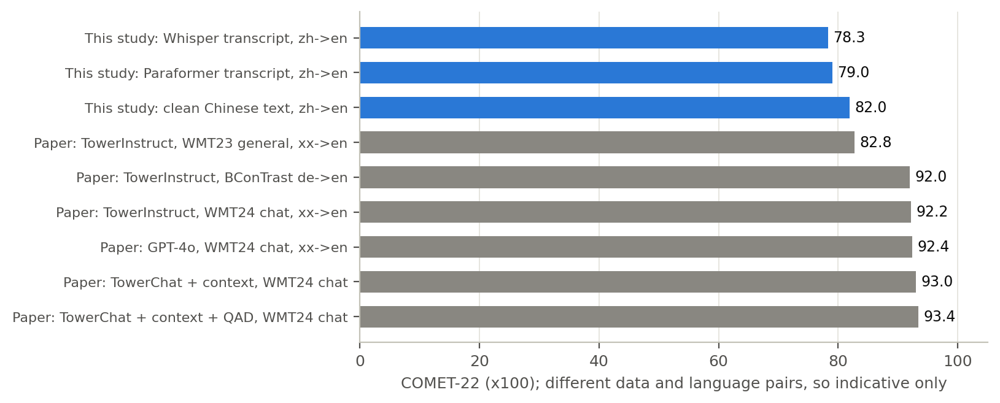

| Prepared by | [ Intern name ] |
| Project guide | [ Guide name and designation ] |
| Laboratory / Division | [ Laboratory / division ] |
| Internship period | [ Start date – end date ] |
| Report date | 27 October 2026 |
Speech translation systems that chain automatic speech recognition (ASR) and machine translation (MT) pass every recognition error on to the translator. This project measures, for Mandarin Chinese to English, how much translation quality is lost when the MT model receives ASR transcripts instead of correct text, and which kinds of recognition errors do the damage.
We assembled 849 Chinese–English sentence pairs from CoVoST 2 and FLEURS, synthesised speech for the Chinese sentences with Edge-TTS, transcribed it with two ASR systems (Whisper large-v3 and Paraformer-zh), translated the transcripts with TowerInstruct-7B-v0.2, and scored the output against the English references with BLEU, chrF++ and COMET-22. One TTS clip was defective and was excluded, leaving 848 clips.
The character error rate (CER) is 6.57% for Whisper and 6.27% for Paraformer. Compared with translating the correct Chinese text, ASR errors cost 3.6–4.3 BLEU, 3.3–3.6 chrF++ and 0.030–0.037 COMET. About half of the clips are transcribed exactly and lose almost nothing; for Whisper, the 20% of clips with CER above 15% account for roughly 62% of the total translation loss. A manual review of the 40 worst cases shows that single-character homophone errors in rare names and technical terms dominate, followed by mangled foreign names, missing punctuation and a few whole-clip failures. The results are compared with two recent papers on context-aware and retrieval-augmented translation, which suggest concrete mitigations (conversational context, quality-aware decoding and terminology retrieval), and the report closes with limitations and future work.
Many practical systems turn foreign-language speech into text in another language in two stages: an ASR model first writes down what was said, and an MT model then translates that text. This cascade is simple, modular and works with strong off-the-shelf components, but it has a well-known weakness: the translator never hears the audio. A word that ASR gets wrong is translated as if it had been said, and modern MT models translate the wrong word fluently and confidently.
For Mandarin Chinese to English, we want to know how much translation quality is lost to ASR errors, and what kinds of errors are responsible. Answering this needs a test set that has (a) audio, (b) the exact Chinese text that was spoken and (c) a trusted English translation, so that the translation of the ASR output can be compared with the translation of the correct text and with the reference.
The work follows the four steps of the proposed methodology agreed for the internship:
<audio, Chinese transcript, English translation>.This is a pilot study of 848 sentences in one language direction (Chinese→English) with synthetic speech. It is designed to produce a working, repeatable evaluation pipeline and first measurements, not final conclusions about real-world audio. Section 8 lists the limits explicitly.
| Corpus | Description | Used | Clips |
|---|---|---|---|
| CoVoST 2 (Wang et al., 2020), zh-CN→en | Read speech from Common Voice, with human English translations of the Chinese sentences. Many sentences come from Wikipedia and contain rare names and technical terms. | Test split, hosted as fixie-ai/covost2 (zh-CN_en); streamed, shuffled with seed 42, first 500 rows with non-empty text and translation | 500 |
| FLEURS (Conneau et al., 2022) | Read speech of the n-way parallel FLoRes sentences in 102 languages; full, longer sentences. | Test split of google/fleurs cmn_hans_cn; the English reference is the en_us transcription of the same sentence id (one clip per sentence id; 349 sentences had an English counterpart) | 349 |
| Total built | 849 | ||
Used for the headline results (after excluding the defective clip fleurs_00121, Section 6.5) | 848 | ||
Every sentence is one row of a manifest with these fields: id, source, audio_path (original recording), zh_ref (Chinese sentence), en_ref (English reference translation). Later steps add tts_audio and tts_voice, the two ASR transcripts and their per-sentence CER, the three translations, and per-sentence chrF++ and COMET scores. The original recordings are kept for future comparison but are not used as ASR input: the methodology feeds the ASR with TTS audio generated from zh_ref, which guarantees that the correct transcript is known exactly.
| Measure | CoVoST 2 | FLEURS | All |
|---|---|---|---|
| Clips | 500 | 349 | 849 |
| Median clip duration (s) | 4.2 | 8.0 | 5.6 |
| Duration range (s) | 1.9 – 9.2 | 0.2 – 20.7 | 0.2 – 20.7 |
| Characters per sentence (mean) | — | 25.4 | |
| Audio format | 16 kHz, mono, 16-bit wav | ||

fleurs_00121.No model was trained or fine-tuned in this project. The contribution is the evaluation pipeline: seven reproducible notebooks and a helper tool for listening checks that chain pre-trained components, run them at scale on Kaggle GPUs and score the results. The components are listed below.
| Stage | Component | Key settings |
|---|---|---|
| Text-to-speech | Microsoft Edge-TTS (cloud neural voices): zh-CN-XiaoxiaoNeural, YunxiNeural, YunjianNeural, XiaoyiNeural | Voice per sentence chosen deterministically from a hash of the id (four voices, both genders); converted to 16 kHz mono wav |
| ASR | Whisper large-v3 (OpenAI; Radford et al., 2023), ~1.55 B parameters, encoder–decoder Transformer | fp16, language zh, greedy decoding, batches of 16 sorted by length; output has punctuation |
| Paraformer-zh (FunASR; Gao et al., 2022), non-autoregressive end-to-end ASR | GPU, batches of 32 files; output has no punctuation and often writes numbers as Chinese words | |
| Machine translation | TowerInstruct-7B-v0.2 (Unbabel; Alves et al., 2024), 7 B parameters, instruction-tuned for ten languages including Chinese and English | fp16 split across two T4 GPUs; ChatML prompt “Translate the following text from Chinese into English”; greedy decoding, 200-token cap |
| Metrics | CER | After traditional→simplified conversion (OpenCC) and removal of punctuation and spaces |
| BLEU (sacreBLEU) | Corpus level, default tokenisation | |
| chrF++ (sacreBLEU) | Character n-grams plus word bigrams (word_order=2) | |
COMET-22 (Unbabel/wmt22-comet-da; Rei et al., 2022) | Neural, reference-based; source = the original Chinese sentence; reported on the 0–1 scale (or ×100) |
The proposed methodology names TowerChat as the translation model. TowerChat is the system introduced by Pombal et al. (2025), one of the two reference papers: TowerBase-7B fine-tuned on translation data plus customer-chat conversations with context-augmented prompts. That paper trains and evaluates it on English↔{German, French, Portuguese-Brazilian, Korean, Dutch}; Chinese is not among the languages, and we did not find a public checkpoint under that name. TowerInstruct-7B is the model that paper uses as its baseline and starting point, and it officially supports Chinese, so this study uses TowerInstruct-7B-v0.2, which was agreed with the project guide. Section 7 discusses what a context-aware TowerChat-style model could add.
| Item | Purpose |
|---|---|
01_datasets | Build the 849-row <audio, zh, en> manifest from CoVoST 2 and FLEURS; package the audio |
02_tts | Synthesise one clip per Chinese sentence (four voices, retries, resumable) |
03_asr | Run Whisper and Paraformer on all clips; compute CER overall and per sentence |
04_translate | Translate the reference text and both transcripts with TowerInstruct (identical strings translated once) |
05_score / 07_rescore_excl | BLEU, chrF++, COMET-22, per-sentence scores, CER buckets, correlation, worst-case export; 07 is the same notebook with the defective clip excluded |
06_audio_check | Automatic quality check of every TTS clip: duration, loudness, clipping, silence, speech rate |
tools/make_listening_page.py | Builds an offline page for rating a sample of clips by ear |
Figure 2. The cascaded evaluation pipeline. The “clean” translation (Tower applied to the correct Chinese text) is an upper bound for what ASR transcripts can achieve with this MT model.
Every sentence is translated three times: from the correct Chinese text (the clean condition), from the Whisper transcript and from the Paraformer transcript. All three outputs are scored against the same English reference. The difference between the clean score and an ASR score is the translation loss caused by ASR errors; comparing against the clean condition, and not only against the reference, separates the damage done by ASR from errors that the MT model would make anyway.
manifest.jsonl; audio was packed into a zip because Kaggle lists at most 500 output files.zh_ref was sent to Edge-TTS with eight requests in flight and up to three retries; the mp3 was converted to 16 kHz mono wav with ffmpeg. All 849 clips were produced in 172 s with no failures.All heavy computation ran on Kaggle notebooks (Python 3.13; two NVIDIA T4 GPUs for ASR, MT and COMET; CPU only for TTS and the audio check). Long runs were executed as saved notebook versions, which run on Kaggle’s servers independently of the author’s computer. Notebooks were authored locally as .py/.ipynb and imported into Kaggle, and each stage published its output as a private Kaggle dataset consumed by the next stage, which makes every intermediate result inspectable. Appendix A lists run times and the problems met along the way.
Unless stated otherwise, results are on 848 clips (500 CoVoST 2, 348 FLEURS). The original 849-clip numbers are given in Section 5.4 for transparency.
| Model | CoVoST 2 (500) | FLEURS (348) | All (848) |
|---|---|---|---|
| Whisper large-v3 | 9.72 | 4.59 | 6.57 |
| Paraformer-zh | 6.69 | 6.01 | 6.27 |

| Input given to TowerInstruct | BLEU | chrF++ | COMET-22 |
|---|---|---|---|
| Correct Chinese text (clean baseline) | 27.81 | 52.46 | 0.8195 |
| Whisper transcript | 24.24 | 49.21 | 0.7827 |
| Paraformer transcript | 23.50 | 48.89 | 0.7899 |
| Loss from ASR errors — Whisper | −3.57 | −3.25 | −0.0368 |
| Loss from ASR errors — Paraformer | −4.31 | −3.57 | −0.0296 |

| Input | CoVoST 2 (500) | FLEURS (348) |
|---|---|---|
| Clean text | 24.77 / 48.34 / 0.7856 | 30.02 / 55.62 / 0.8683 |
| Whisper | 21.75 / 44.82 / 0.7389 | 26.06 / 52.56 / 0.8456 |
| Paraformer | 21.89 / 45.31 / 0.7522 | 24.68 / 51.63 / 0.8440 |

| CER bucket | System | Clips | COMET (ASR input) | COMET (clean) | Loss |
|---|---|---|---|---|---|
| CER = 0 (exact) | Whisper | 411 | 0.848 | 0.855 | 0.007 |
| Paraformer | 427 | 0.834 | 0.843 | 0.009 | |
| 0–5% | Whisper | 98 | 0.825 | 0.840 | 0.015 |
| Paraformer | 94 | 0.825 | 0.841 | 0.016 | |
| 5–15% | Whisper | 167 | 0.772 | 0.816 | 0.044 |
| Paraformer | 189 | 0.765 | 0.816 | 0.051 | |
| > 15% | Whisper | 172 | 0.614 | 0.727 | 0.113 |
| Paraformer | 138 | 0.664 | 0.738 | 0.074 |
The Pearson correlation between a sentence’s CER and its COMET loss is 0.50 for Whisper and 0.33 for Paraformer: CER is a useful but imperfect predictor, which Section 6 explains.
| Measure | 849 clips | 848 clips |
|---|---|---|
| CER Whisper / Paraformer (%) | 6.81 / 6.51 | 6.57 / 6.27 |
| BLEU clean / Whisper / Paraformer | 27.87 / 24.18 / 23.44 | 27.81 / 24.24 / 23.50 |
| chrF++ clean / Whisper / Paraformer | 52.50 / 49.11 / 48.79 | 52.46 / 49.21 / 48.89 |
| COMET clean / Whisper / Paraformer | 0.8196 / 0.7822 / 0.7894 | 0.8195 / 0.7827 / 0.7899 |
The exclusion lowers both CERs by 0.24 points (the clip counted as roughly 55 character errors for each system) and moves the translation scores by at most 0.1 point; the conclusions do not change.

Roughly half of all sentences are transcribed exactly (411 of 848 for Whisper, 427 for Paraformer), and these lose almost nothing (0.007–0.009 COMET). The loss comes from the other half, and mostly from the sentences with the worst transcripts:

The practical consequence is that average scores hide a heavy tail: improving the worst fifth of the transcripts would recover most of the lost quality, whereas small improvements on already good transcripts would change little.

The two systems have similar overall CER but different profiles. Whisper is much worse on CoVoST 2 (9.72% versus 6.69%) and better on FLEURS (4.59% versus 6.01%), and its worst cases are more severe (loss of 0.113 COMET in the highest-CER bucket versus 0.074). Overall, Paraformer has the lower CER and the smaller COMET loss (0.030 versus 0.037) yet the larger BLEU and chrF++ loss (4.31 versus 3.57 BLEU). A plausible explanation, consistent with the error review but not tested here, is that Paraformer’s unpunctuated output and number-as-word style change surface forms (digits versus words, sentence boundaries) that n-gram metrics penalise more than the neural metric does. CER alone therefore does not rank ASR systems for a downstream translation task.
CoVoST 2 scores are lower than FLEURS at every stage, including the clean-text baseline (COMET 0.786 versus 0.868). Its sentences are short, drawn from Wikipedia, and rich in rare proper names and terms, and its English references are noisy (for example “Borned in Kochi county”). Part of the CoVoST 2 gap is therefore a property of the data, not of ASR, which is why the clean-text baseline matters.
An automatic check of all 849 clips (notebook 06) found no clipping, no very quiet clips, no clip longer than Whisper’s 30-second window (maximum 20.7 s), and no long internal pauses. It found one defective clip, fleurs_00121: a 55-character sentence synthesised as 0.24 s of audio (89% silent). Whisper returned an unrelated three-character string for it and Paraformer returned nothing, so it was the worst case for both systems although neither ASR model was at fault. Fifteen clips were flagged as mostly silent, but all are very short CoVoST 2 phrases padded to about 1.9 s, and two FLEURS clips have unusually fast delivery (6.8 and 8.2 characters per second). The finding illustrates why synthetic data needs its own quality control before ASR errors are interpreted.
Two papers were supplied with the internship: Pombal et al. (2025), A Context-aware Framework for Translation-mediated Conversations (the TowerChat paper), and Nieminen, Tiedemann and Virpioja (2025), Implementing and Evaluating Multi-source Retrieval-Augmented Translation. Both improve the translation stage with information the plain model lacks (conversation context, and terminology plus translation-memory matches). Our study measures what happens to the translation stage when its input is damaged by ASR. They are complementary, and our error analysis points to the same kind of missing information that both papers address.
| This study | Pombal et al. (2025), TowerChat | Nieminen et al. (2025), RAT | |
|---|---|---|---|
| Question | How do ASR errors degrade zh→en translation? | Can conversational context, in training and decoding, improve LLM-based translation of chats? | How should terminology and translation-memory matches be combined in one MT system? |
| Input | Speech (synthetic) → ASR transcripts | Text chat turns with preceding bilingual context | Text sentences plus retrieved terms and fuzzy matches |
| Languages | Chinese→English | English↔German, French, Portuguese, Korean, Dutch (WMT24 Chat); English↔German (BConTrast) | English→Finnish |
| Models | Whisper large-v3, Paraformer-zh, TowerInstruct-7B | TowerChat-7B (fine-tuned TowerBase-7B), TowerInstruct-7B, GPT-4o | Marian NMT models trained with retrieval annotations; Gemma 3 12B, EuroLLM 9B |
| Training | None (pre-trained models only) | Context-augmented instruction fine-tuning; optional distillation of quality-aware decoding | Continued training of Tatoeba-Challenge models; contrastive ensembling |
| Metrics | CER, BLEU, chrF++, COMET-22; manual error taxonomy | chrF, COMET-22, MetricX-XL, ContextMQM (GPT-4), MuDA F1; significance clusters | Reference-free COMET, plus a purpose-built test suite scoring term and fuzzy-match use |
| Main result | ASR errors cost 3.6–4.3 BLEU / 0.03–0.04 COMET; loss concentrated in badly recognised sentences and rare terms | Context-aware training and quality-aware decoding (MBR with COMET) beat TowerInstruct and, on WMT24, GPT-4o | Contrastive ensembling of term and fuzzy models beats naive ensembles and single multi-source models; Gemma 3 12B is best on terminology |

The paper reports COMET-22 around 92–93 for chat translation into English, far above our 78–82. This does not mean our MT model performs worse. The paper also reports TowerInstruct’s COMET on the general-domain WMT23 test set (82.77 for XX→EN), and our clean-text figure of 81.95 sits close to that, whereas chat conversations are short, repetitive and domain-specific, which makes them easier to score well. Our data (rare Wikipedia names and noisy references) is closer to general-domain text. Two further points are worth noting: the paper’s TowerChat loses only 0.3 COMET on WMT23 relative to TowerInstruct, so context-aware fine-tuning does not appear to damage general translation; and the paper does not include Chinese, so its gains cannot be assumed for zh→en.
The papers study text-to-text translation; none involves speech. Their language pairs, domains and metrics (MetricX, ContextMQM, term scores) differ from ours, and their systems are trained or retrieval-augmented, whereas ours are used off the shelf. The comparison above is therefore about methodology and plausible mitigations, not about whose numbers are higher.
This project delivered a complete, repeatable pipeline that takes Chinese–English sentence pairs, synthesises speech, recognises it with two ASR systems, translates the transcripts with TowerInstruct-7B and scores the result, together with the quality checks needed to trust it. On 848 sentences, ASR errors lower translation quality by about 3.6–4.3 BLEU, 3.3–3.6 chrF++ and 0.03–0.04 COMET compared with translating correct text, at CERs of 6.57% (Whisper) and 6.27% (Paraformer).
The more useful finding is where the loss comes from. Half of the sentences are recognised exactly and translate almost perfectly; a minority of badly recognised sentences, mainly single-character homophone errors in rare names and technical terms, account for most of the loss, and for Whisper the worst fifth of the sentences accounts for about 62%. CER only partly predicts this, because punctuation and number formatting change translations without changing CER. A data-quality check also found one defective synthetic clip that had been the worst case for both ASR systems.
The two reference papers point to the next steps: conversational context and quality-aware decoding for ambiguous input, and terminology retrieval for exactly the rare terms that cause the damage. Because this was a pilot with synthetic speech and one translation model, the numbers should be taken as a baseline and a method, to be repeated on real audio and domain vocabulary before conclusions are drawn for deployment.
The two reference papers (Pombal et al., 2025; Nieminen et al., 2025) were read in full from the copies supplied in the internship folder. The remaining citations were written from the authors’ published titles and should be checked against the originals before submission.
| Notebook | Accelerator | Run time | Output |
|---|---|---|---|
01_datasets | CPU | 2 min 10 s | zh-en-manifest: 849 rows + audio zip |
02_tts | CPU | 207 s (synthesis 172 s) | zh-tts-audio: 849 wav files + manifest |
03_asr | 2× T4 | 714 s (Whisper 256 s, Paraformer 136 s) | zh-asr-transcripts |
04_translate | 2× T4 | 817 s | zh-mt-outputs |
05_score | 2× T4 | 146 s | Scores on 849 clips |
06_audio_check | CPU | 30 s | Per-clip audio statistics; 17 flagged clips |
07_rescore_excl | 2× T4 | 155 s | Scores on 848 clips (headline results) |
| Problem | Resolution |
|---|---|
| Common Voice no longer available on Hugging Face (October 2025), so CoVoST 2 could not be built as planned | Probed alternatives; used a CoVoST 2 mirror with embedded audio plus FLEURS joined to its English sentences by id |
| Kaggle lists at most 500 output files, so a dataset created from 849 loose wav files would have missed the rest | Packed audio into a zip and kept two output files per stage; checked file lists before publishing |
| Whisper through the Hugging Face pipeline ran out of memory, then ran more than 30 minutes without finishing | Rewrote it to call generate directly on length-sorted batches with progress prints: 256 s |
unbabel-comet pins numpy<2; letting pip change numpy broke transformers and SciPy, and the COMET encoder assumed an older transformers return format | Installed COMET with --no-deps plus only the packages it needs, and patched the one encoder function to read named outputs |
| Kaggle allows one interactive GPU session; the author’s computer restarted during a long run | Ran long jobs as saved notebook versions, which execute on Kaggle’s servers, and stopped idle sessions |
| One synthetic clip was almost empty and distorted the worst-case list | Detected by the audio check, excluded, and all metrics recomputed (notebook 07) |
Each row shows the Chinese reference, what the ASR system wrote, the English reference, Tower’s translation of the correct text, and Tower’s translation of the ASR output.
| Type | Chinese reference | ASR output | English reference | Translation of clean text | Translation of ASR output |
|---|---|---|---|---|---|
| Homophones in a technical term (Whisper) | 其它铂基药物还包括顺铂和卡铂。 | 其他搏击药物还包括顺搏和卡搏 | Other platinum based drugs include cisplatin and carboplatin. | Other platinum-based drugs include cisplatin and carboplatin. | Other combat drugs include sinupret and kampfer. |
| Homophones in a rare surname (Whisper) | 钮姓是满族的常用姓氏之一。 | 扭心是满足的常用信使之一 | The surname Niu is one of the common surnames in Manchu. | Zhu is one of the common surnames of the Manchu people. | Nausea is one of the common messengers of satisfaction. |
| Homophones in a botanical name (Paraformer) | 南川绣线菊为蔷薇科绣线菊属下的一个种。 | 南川秀县局为蔷薇科秀县局属下的一个种 | Spiraea rosthornii pritz is a member of Rosaceae family, Spiraea genus. | Nanchang convolvulus is a species of the genus Convolvulus in the rose family. | Nanchuan Xiang County Bureau is a subordinate of the Peony Bureau of Xiang County. |
| Missing punctuation, CER 0.0 (Paraformer) | 我吃的亏还少吗？ | 我吃的亏还少吗 | Didn’t I suffer enough losses? | Have I suffered any losses? | Am I still losing out on eating this? |
| Common-word homophone (Paraformer) | 又是一个付费的全民公测 | 又是一个付费的全民公厕 | Another paid public beta. | Another paid public beta | Another public toilet that requires payment |
| Repetition loop (Whisper) | 现任参议员、阿根廷第一夫人克里斯蒂娜·费尔南德斯·德·柯克纳 … | … 克里斯蒂娜·克里斯蒂娜·克里斯蒂娜 … (repeated) | Current senator and Argentine First Lady Cristina Fernandez de Kirchner announced her presidential candidacy … | Argentine first lady and current senator Cristina Fernandez de Kirchner announced her candidacy … | The current senator, Argentina’s first lady Cristina Fernández de Kirchner Cristina Fernández de Kirchner … (repeated) |
| Defective audio (both) | 人们自古以来就知道金、银、铜等基本化学元素 … | Whisper: 《一切》; Paraformer: (empty) | People have known about basic chemical elements such as gold, silver, and copper from antiquity … | People have known about basic chemical elements such as gold, silver, and copper since ancient times … | Whisper: “Everything”; Paraformer: (empty) |
t2s), lower-cased, and reduced to Chinese characters, Latin letters and digits (punctuation and spaces removed). CER = (substitutions + deletions + insertions) / number of reference characters. Corpus CER sums edits and reference characters over all sentences; per-sentence CER is used for the buckets.word_order=2).| Location | Contents |
|---|---|
notebooks/01_datasets … 07_rescore_excl (.py and .ipynb) | All pipeline code, one file per stage |
tools/make_listening_page.py | Builds the offline listening page for TTS clips |
report/ | This report (.pdf and .html), the figure generator make_figures.py and the build script |
results_summary.md | Plain-text summary of all measurements, including the 849-clip results |
| Kaggle (private) | Notebooks 01–07; datasets zh-en-manifest, zh-tts-audio, zh-asr-transcripts, zh-mt-outputs; scoring outputs manifest_scored.jsonl, scores_overall.csv, scores_by_cer_bucket.csv, worst_cases.csv, cer_vs_comet_drop.png, audio_check.csv, audio_flagged.csv |